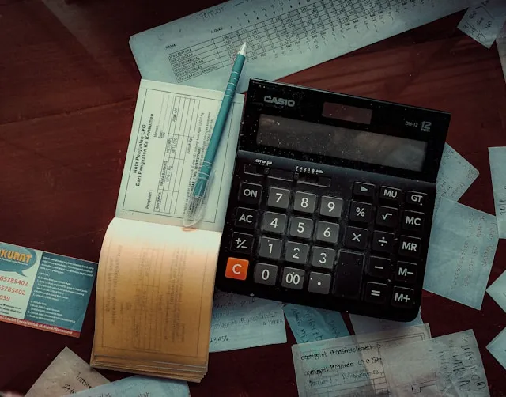
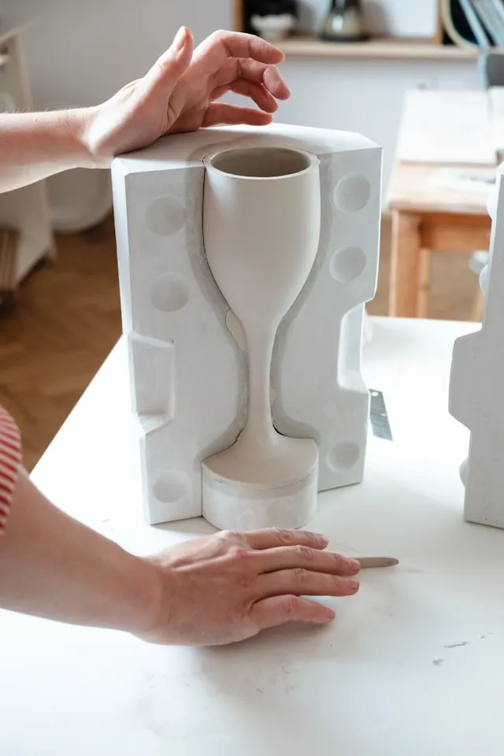

補助金申請で企業の成長を
後押しします。
宝塚市に根ざし、地元企業の皆様を全力でサポート。
最適な補助金のご提案から申請代行まで、すべてワンストップで対応します。
経験豊富な行政書士が、複雑な手続きを分かりやすくご説明いたします。
まずはお気軽にご相談ください。
補助金申請で企業の成長を
後押しします。
宝塚市に根ざし、地元企業の皆様を全力でサポート。
最適な補助金のご提案から申請代行まで、すべてワンストップで対応します。
経験豊富な行政書士が、複雑な手続きを分かりやすくご説明いたします。
まずはお気軽にご相談ください。
以下の各種補助金申請書類作成・申請代理を行います
小規模事業者（従業員20人以下）を対象に、販路開拓や事業継続のための経費を補助します。 たとえば、広告宣伝費や設備投資に使え、補助率は3分の2、補助上限額は50万円（場合により100万円以上の枠もあり）です。
補助金 は要件を満たした方が全て補助されるわけではありません。申請内容を審査し、評価 の高い順に採択者が決まります。
補助事業の完了から１年後に「事業効果および賃金引上げ等状況報告」（交付規程様式 第１４号）を文書等で提出が必要です。

日本政策金融公庫や商工中金などの公的機関が提供する低金利の融資制度を利用するための申請書作成支援です。 事業計画書や資金計画の提出が求められ、必要な手続きや条件を満たすことで融資を受けやすくなります。

中小企業の生産性向上や設備導入、新製品開発などを支援する補助金です。 ITやAIの導入、IoT技術なども対象となり、補助率は2分の1または3分の2、補助上限額は通常750万円ですが、プロジェクトの内容に応じて異なります。
各申請の大まかな流れになります。
詳細は、申請する文書により異なります。
こちらのお問い合わせフォーム、またはお電話でお問い合わせください。
直接面談、またはオンライン面談にて、ご増段内容などをヒアリングします。
どの種類の補助金をどのぐらいの範囲まで適用できるか、貴社の概要を調査したうえ、お見積りを提示します。
必要書類の提出、作成書類の確認・修正を行い、申請書を作成・代理申請します。
採択が決定するまでは、特にすることはありません。決定したら、報酬の支払いとなります。
各申請の料金はこちらです。
★初回相談（30分以内）は、無料です。
| 業務内容 | 着手金 | 成功報酬 |
|---|---|---|
| 公的融資申請書作成 | 30,000円 | 融資金額の3% |
| ものづくり補助金申請書 | 30,000円 | 採択金額の10% |
| 小規模事業者持続化補助金 申請書 |
30,000円 | 採択金額の10% |
| IT導入補助金申請書 | 30,000円 | 採択金額の10% |
｢こんなことを相談してもよいだろうか｣
｢営業時間外でも依頼できるだろうか｣など、
ふと気になる疑問がありましたら気兼ねなくご連絡ください。